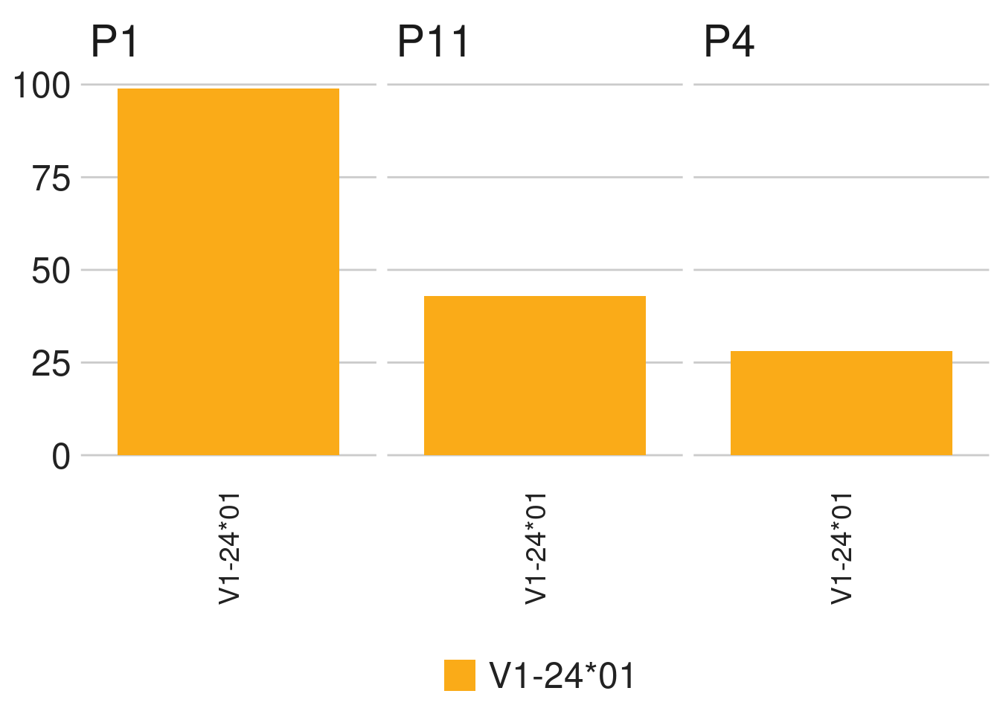

4 IGHV1-24 - G3
4.1 Allele appearnce
The group of IGHV1-24 includes 1 alleles, 1 out of the alleles are functional.
For each allele we counted the number of appearances across the population, any appearance was considered valid.

4.2 Sequence depth
To examine the potential cutoff we observed the sequence depth for each allele
4.3 Observations
For this group we’ve seen a single allele, hence the general summary statistics do not apply here and were omitted.
This section is editable by clicking on the edit button below. To refresh the section click on the refresh button
You can access the file also from here